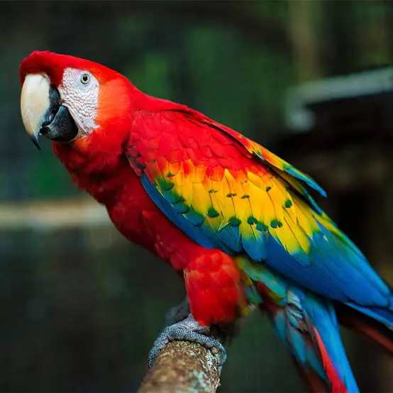

Scarlet Macaw

Scarlet Macaw (Guacamaya Roja)
Copán Ruins

Copán Ruins
About Honduras
Honduras is a Central American country known for the ancient Mayan city of Copán, the cloud forests of La Tigra, and the world-class reefs of the Bay Islands (Roatán, Utila, Guanaja). Spanish is the official language and the currency is the Lempira (HNL).
Weather
Currently: Sunny, 28 °C